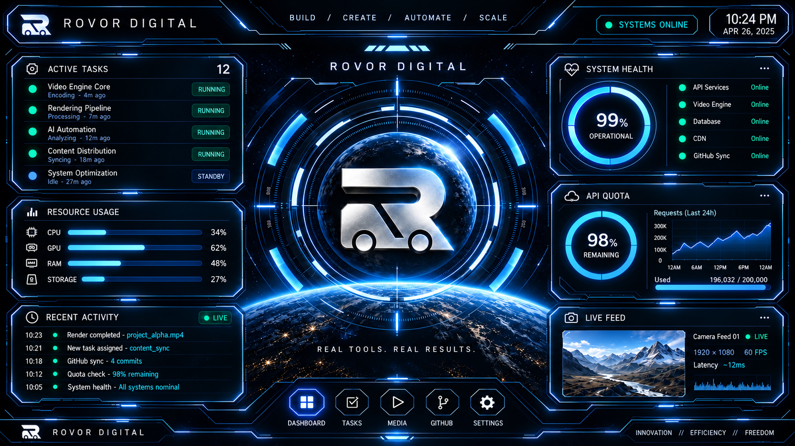

ROVOR / COMMAND DECK
SOURCE UNVERIFIED
↻ Refresh
LIVE PANELS: OFF
1:1 View
⌘ Command
⛶

Tasks
Systems
Media
GitHub
Settings
REFERENCE-ACCURATE VISUAL LAYER
◈
LIVE DETAILS OPEN IN INTERACTIVE PANELS
ROVOR DIGITAL / CONTROL INTERFACE
Command Console
Verified data when available
×
↻ Verify Source
Open Repository ↗